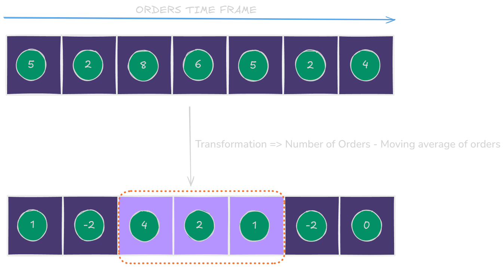
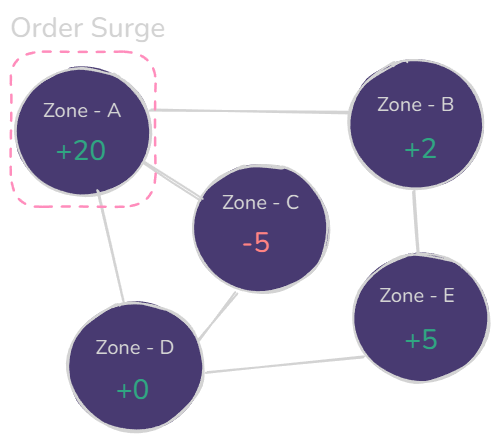
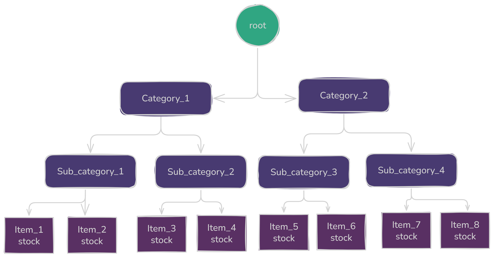

1. Surge Detection using Kadane’s Algorithm
1.1 Introduction
In high-volume food-delivery services, understanding when order volumes spike is critical. Detecting these
“surge windows” allows platforms to dynamically allocate riders, adjust pricing, and
maintain high
service levels without over- or under-provisioning resources.
To efficiently identify contiguous periods of maximum order volume, many systems turn to
Kadane’s Algorithm—an O(n) time, O(1) space solution for the
classic
maximum-subarray problem.
1.2 Kadane’s Algorithm Overview
At its heart, Kadane’s Algorithm scans a one-dimensional array (e.g., minute-by-minute order counts) in a
single
pass, keeping track of the maximum sum ending at each position and the best overall sum seen so far.
Pseudocode & Complexity
max_so_far ← –∞
max_ending_here ← 0
for each x in A[1..n]:
max_ending_here ← max(x, max_ending_here + x)
max_so_far ← max(max_so_far, max_ending_here)
return max_so_far
Time Complexity: O(n) — one pass over the data
Space Complexity: O(1) — only two scalar trackers
1.3 System Integration & Real-World Usage
In a production food-delivery platform, Kadane’s Algorithm doesn’t live in isolation—it’s a core part of an
event-driven streaming pipeline that continuously detects order surges and drives automated responses.

Figure 2. A time frame of incoming orders,
which undergo a transformation where they are substracted by a number (moving average of the number of
order). Further the Kadanes Algorithm is performed on the resulting array.
a. SurgeAnalyzer Service
A lightweight SurgeAnalyzer container pulls the current buffer slice and invokes Kadane’s
Algorithm—
scanning n counters in O(n) time (where n is small and fixed). It
returns the
optimal subarray [i..j] and the total orders within that window.
By running on each new minute (or at configurable intervals), it maintains real-time awareness of emerging
peaks
without ever scanning the entire day’s data.

Figure 2. Zone - A has a order surge which then
activates DispatchCoordinator service and SurgePricing service.
b. DispatchCoordinator Orchestrator
The DispatchCoordinator listens to SurgeAnalyzer events and translates the surge window into
actionable
rider allocations.
For example, if Zone A’s last-hour buffer shows a 20-order surge between minutes 15–25, the service
computes:
“deploy 5 extra riders to Zone A at minute 25.”
These instructions flow into an operations API that triggers rider-assignment workflows and sends push
alerts to
driver apps.
c. SurgePricing Engine
Concurrently, the SurgePricingEngine receives the same surge window information. To avoid
sticker-shock, it applies a ramp-up function—gradually increasing delivery fees over a
5–10 minute span, capping at a configured maximum.
This smooth transition ensures customers see only modest, predictable price changes even during high-demand
windows.
2. Segment Trees: Dynamic Range Queries
2.1 Introduction
In high-throughput systems—like food delivery or e-commerce platforms—data arrives and updates constantly.
Whether you're tracking inventory by category or aggregating metrics over time windows, the ability to query
and update
intervals dynamically and efficiently becomes critical. This is where
Segment Trees shine: a flexible, tree-based structure designed for fast, real-time
range queries and updates.
2.2 Segment Tree Overview
A segment tree is a binary tree built over an array, where each node stores a summary
(sum, min, max, etc.) of a subarray [l..r]. The root node covers the full array,
and each leaf corresponds to a single element.
Pseudocode & Complexity
// Build the segment tree
function build(node, l, r):
if l == r:
Tree[node] ← A[l]
else:
mid ← (l + r) / 2
build(2*node, l, mid)
build(2*node+1, mid+1, r)
Tree[node] ← Tree[2*node] + Tree[2*node+1]
// Range query in [L..R]
function query(node, l, r, L, R):
if R < l or r < L:
return 0
if L <= l and r <= R:
return Tree[node]
mid ← (l + r) / 2
left_sum ← query(2*node, l, mid, L, R)
right_sum ← query(2*node+1, mid+1, r, L, R)
return left_sum + right_sum
// Point update at index
function update(node, l, r, index, value):
if l == r:
Tree[node] ← value
else:
mid ← (l + r) / 2
if index ≤ mid:
update(2*node, l, mid, index, value)
else:
update(2*node+1, mid+1, r, index, value)
Tree[node] ← Tree[2*node] + Tree[2*node+1]
Time Complexity:
- Build: O(n)
- Query: O(log n)
- Update: O(log n)
Space Complexity:
- O(4n) for tree array

Figure 3. Hierarchical Segment Tree representing Inventory. Each parent node stores the
stock summary for its child items.
2.3 Real-World System Integration
a. InventoryCounter Service
The image above shows a segment tree used by the InventoryCounter microservice. Every item
in the menu belongs to
a Sub-Category, which itself belongs to a Category (e.g., “Pizza → Veg Pizza →
Margherita”).
Each node holds the aggregate stock count of its subtree. A point update at the leaf node (Item_3 stock)
auto-propagates upward,
updating Sub_category_2 and Category_1.
- Query: “Show all items in Category_1 that are in stock” → Traverse subtree under
Category_1 and filter non-zero leaf nodes.
- Query: “Is Category_2 out of stock?” → Check if total stock in Category_2 node is 0.
- Query: “How many items are left in Sub_category_3?” → Query node of Sub_category_3
directly.
- Update: “Item_5 sold” → Decrease leaf node value, propagate to Sub_category_3 and
Category_2.
This hierarchical approach allows the system to instantly answer key inventory questions at any level—items,
subcategories, or categories—
with just O(log n) time complexity.
b. TimeWindowAnalytics Service
Segment Trees are ideal for dynamically updated time-series analytics—like live order counts across a
rolling
30-minute or 1-hour window.
- Query: “How many orders placed in the last 15 minutes?” →
query(t-14, t)
- Update: Order at minute
t → update(t, +1)
c. HeatmapAggregator for Zones
When each geographical zone is assigned an index (via hashing or quad-tree ordering), a segment tree can
track
zone-level KPIs—like average delivery time or order density.
Admin dashboards can then use range queries to display regional rollups with minimal latency.
3. Fenwick Tree / Binary Indexed Tree
In systems that require frequent point updates and fast prefix queries—such as tracking cumulative metrics
like
total views or price deltas—
the Fenwick Tree (also known as Binary Indexed Tree) is a compact and efficient data
structure.
3.1 Overview of Fenwick Tree
.png)
Figure 3. Interpretation of the Fenwick tree as tree. The nodes of the tree show the ranges they cover.
A Fenwick Tree maintains an auxiliary array B[1..n] where each index i stores a
partial sum of the original array
A. Specifically, it holds:
B[i] = A[i - 2^r + 1] + A[i - 2^r + 2] + ... + A[i]
To compute prefix sums from A[1] to A[i], it climbs backward using the Least
Significant Bit (LSB)
to skip over relevant chunks.
Pseudocode & Complexity
// Prefix sum from A[1..i]
function sum(i):
s = 0
while i > 0:
s += B[i]
i -= i & (-i)
return s
// Add 'delta' to A[i]
function update(i, delta):
while i ≤ n:
B[i] += delta
i += i & (-i)
Time Complexity:
- Update: O(log n)
- Prefix Sum Query: O(log n)
- Space: O(n)
3.2 Real-World System Integration
a. ClickStreamCounter Service
Suppose you need to track the number of views per item, and frequently query the total number of views for
the
top k ranked items.
Each user click triggers an update(i, +1) on the Fenwick tree. For real-time stats like “how
many
views have items 1–k received?”,
a simple sum(k) retrieves the answer instantly.
- Update: A user views Item 42 →
update(42, +1)
- Query: “Total views for top 100 items?” →
sum(100)
b. DynamicPricingImpact Service
In financial systems or e-commerce platforms, you might apply frequent small price changes to products and
occasionally want to know the total
impact across a range. For example, “how much has the cumulative price changed for items 1 to 250?”
- Update: Increase price of Item 30 by ₹3 →
update(30, +3)
- Query: “Net change for first 250 items?” →
sum(250)
Fenwick Trees are lightweight (using just O(n) space) and cache-friendly due to their
array-based
structure, making them
ideal for scenarios with frequent updates and running totals.